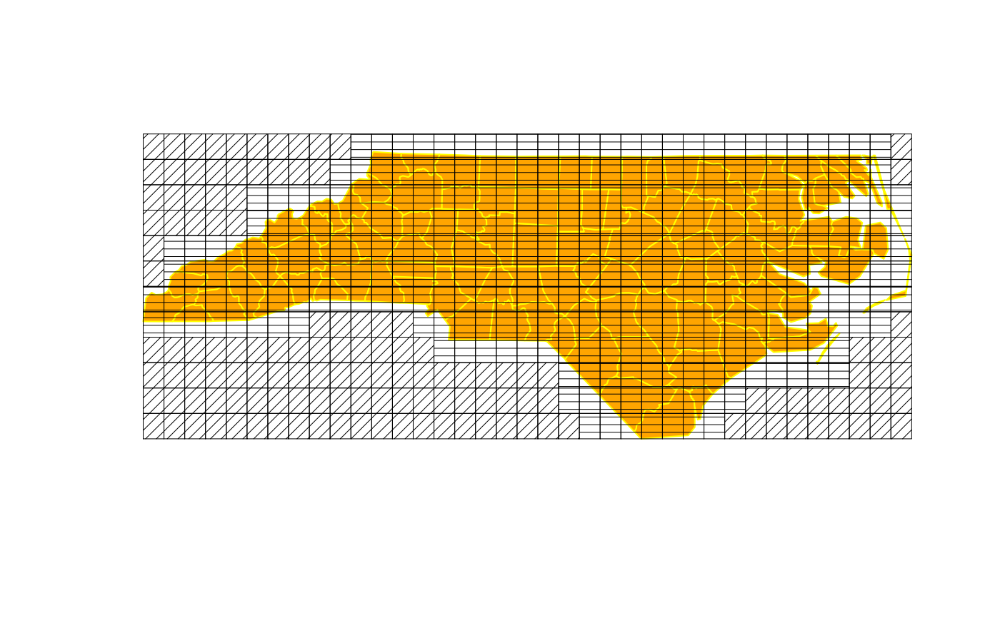

experimental-functions.RdFunctions still under development using the GEOS STRtree structure to find intersecting object component envelopes (bounding boxes).
gUnarySTRtreeQuery(obj) gBinarySTRtreeQuery(obj1, obj2) poly_findInBoxGEOS(spl, as_points=TRUE)
| obj, obj1, obj2 | Objects inheriting from either |
|---|---|
| spl | Object that inherits from the |
| as_points | Logical value indicating if the polygon should be treated as points |
gUnarySTRtreeQuery and poly_findInBoxGEOS do the same thing, but poly_findInBoxGEOS uses the as_points argument to build the input envelopes from proper geometries. gUnarySTRtreeQuery and gBinarySTRtreeQuery build input envelopes by disregarding topology and reducing the coordinates to a multipoint representation. This permits the tree to be built and queried even when some geometries are invalid. gUnarySTRtreeQuery and poly_findInBoxGEOS return a list of length (n-1) of 1-based indices only for the “greater than i” indices. gBinarySTRtreeQuery returns a list of the length of obj2 with 1-based indices of obj1.
Roger Bivand & Colin Rundel
if (require(maptools)) { xx <- readShapeSpatial(system.file("shapes/fylk-val-ll.shp", package="maptools")[1], proj4string=CRS("+proj=longlat +datum=WGS84")) a0 <- gUnarySTRtreeQuery(xx) a0 bbxx <- bbox(xx) wdb_lines <- system.file("share/wdb_borders_c.b", package="maptools") xxx <- Rgshhs(wdb_lines, xlim=bbxx[1,], ylim=bbxx[2,])$SP a1 <- gBinarySTRtreeQuery(xx, xxx) a1 nc1 <- readShapePoly(system.file("shapes/sids.shp", package="maptools")[1], proj4string=CRS("+proj=longlat +datum=NAD27")) a2 <- gUnarySTRtreeQuery(nc1) a3 <- poly_findInBoxGEOS(nc1) all.equal(a2, a3) a2 pl <- slot(nc1, "polygons")[[4]] a5 <- gUnarySTRtreeQuery(pl) a5 SG <- Sobj_SpatialGrid(nc1, n=400)$SG obj1 <- as(as(SG, "SpatialPixels"), "SpatialPolygons") a4 <- gBinarySTRtreeQuery(nc1, obj1) plot(nc1, col="orange", border="yellow") plot(obj1, angle=sapply(a4, is.null)*45, density=20, lwd=0.5, add=TRUE) set.seed(1) pts <- spsample(nc1, n=10, type="random") res <- gBinarySTRtreeQuery(nc1, pts) }#>#>#> Warning: readShapeSpatial is deprecated; use rgdal::readOGR or sf::st_read#> Warning: readShapeLines is deprecated; use rgdal::readOGR or sf::st_read#> Data are line data#> Warning: readShapePoly is deprecated; use rgdal::readOGR or sf::st_read#> Warning: CRS object has comment, which is lost in output